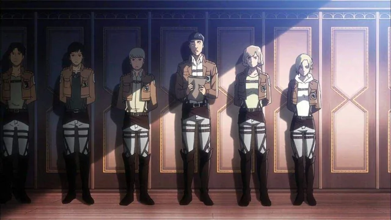

Congratulations, recruit! You have joined the Military Police Brigade, the most prestigious division within the Walls. Stationed deep inside Wall Sina, your duty is to maintain order, protect the royal family, and uphold the peace of humanity’s safest cities, far from the Titans that threaten the outer districts.
You’ve made it, life inside the walls is luxurious compared to the chaos outside. The streets are clean, the air feels safe, and Titans are nothing but distant nightmares. But peace here comes with whispers of corruption and secrecy.
Your commanding officer assigns you simple patrol duty. The work is easy… almost too easy. You begin to wonder what really goes on in the capital.
Tip: Every choice you make echoes through the walls of the capital, tread carefully.